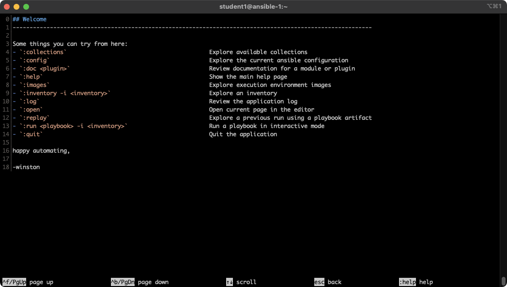
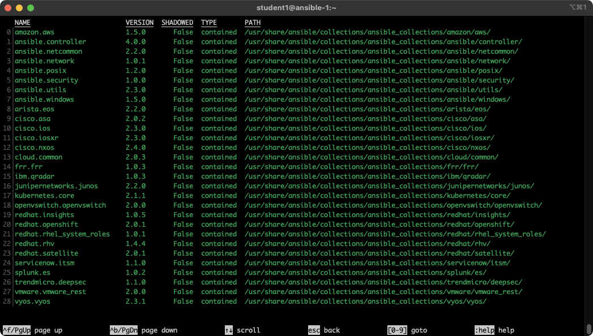
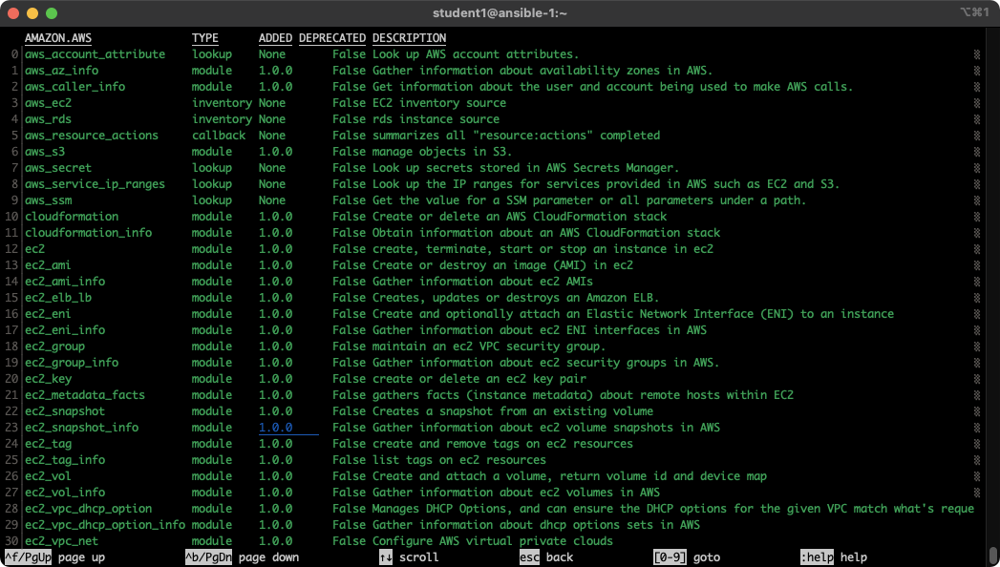
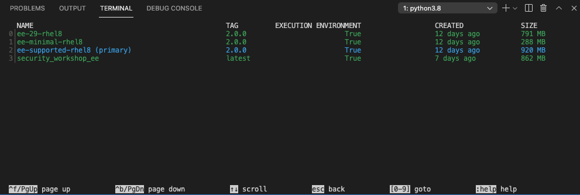
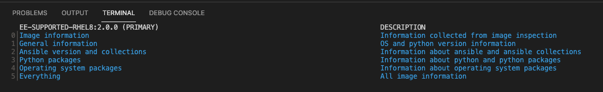

Ansible Navigator
Objective
In this exercise, we are going to explore the latest Ansible command line utility ansible-navigator to learn how to work with inventory files and the listing of modules when needing assistance. The goal is to familiarize yourself with how ansible-navigator works and how it can be used to enrich your Ansible experience.
This exercise will cover
- Working with inventory files
- Locating and understanding an
iniformatted inventory file - Listing modules and getting help when trying to use them
Guide
With the introduction of Ansible Automation Platform 2, several new key components are being introduced as a part of the overall developer experience. Execution environments have been introduced to provide predictable environments to be used during automation runtime. All collection dependencies are contained within the execution environment to ensure that automation created in development environments runs the same as in production environments.
What do you find within an execution environment?
- RHEL UBI 8
- Ansible 2.9 or Ansible Core 2.11
- Python 3.8
- Any content Collections
- Collection python or binary dependencies.
Why use execution environments?
They provide a standardized way to define, build and distribute the environments that the automation runs in. In a nutshell, Automation execution environments are container images that allow for easier administration of Ansible by the platform administrator.
Considering the shift towards containerized execution of automation, automation development workflow and tooling that existed before Ansible Automation Platform 2 have had to be re-imagined. In short, ansible-navigator replaces ansible-playbook and other ansible-* command line utilities.
With this change, Ansible playbooks are executed using the ansible-navigator command on the control node.
The prerequisites and best practices for using ansible-navigator have been done for you within this lab.
These include:
- Installing the
ansible-navigatorpackage - Creating a default settings
/home/student/.ansible-navigator.ymlfor all your projects (optional) - All execution environment (EE) logs are stored within
/home/student/.ansible-navigator/logs/ansible-navigator.log - Playbook artifacts are saved under
/tmp/artifact.json
Follow the next link for more information on the Ansible navigator settings.
Tip
The parameters for ansible-navigator maybe modified for your specific environment. The current settings use a default ansible-navigator.yml for all projects, but a specific ansible-navigator.yml can be created for each project and is the recommended practice.
A useful ansible-navigator-configuration for the workshop environment is the following, create a new file in your project directory /home/student/ansible-files/ansible-navigator.yml and paste in this configuration:
---
ansible-navigator:
ansible:
# Specify an inventory file path or comma separated host list
inventories:
- /home/student/lab_inventory/hosts
# Sets configuration for the creation of artifacts for completed playbooks.
# Can be enabled or disabled and specify filename and location
playbook-artifact:
enable: true
save-as: ~/ansible-files/artifacts/{playbook_name}-artifact-{ts_utc}.json
# Set user interface mode, either 'stdout' or 'interactive'
# Mode 'stdout' ensures same output method as with ansible-playbook command
mode: interactive
# Enable or disable the use of an execution environment and specify different options
execution-environment:
image: registry.redhat.io/ansible-automation-platform-20-early-access/ee-supported-rhel8:2.0.0
enabled: true
container-engine: podman
pull-policy: missing
volume-mounts:
- src: "/etc/ansible/"
dest: "/etc/ansible/"
Adjust the path to your inventory file, as well as the used container image if a newer image is used in the default ansible-navigator-configuration.
Step 1 - Work with your Inventory
An inventory file is a text file that specifies the nodes that will be managed by the control machine. The nodes to be managed may include a list of hostnames or IP addresses of those nodes. The inventory file allows for nodes to be organized into groups by declaring a host group name within square brackets ([]).
To use the ansible-navigator command for host management, you need to provide an inventory file which defines a list of hosts to be managed from the control node. In this lab, the inventory is provided by your instructor. The inventory file is an ini formatted file listing your hosts, sorted in groups, additionally providing some variables. It looks like:
[web]
node1 ansible_host=<X.X.X.X>
node2 ansible_host=<Y.Y.Y.Y>
node3 ansible_host=<Z.Z.Z.Z>
[control]
ansible-1 ansible_host=44.55.66.77
Ansible is already configured to use the inventory specific to your environment. We will show you in the next step how that is done. For now, we will execute some simple commands to work with the inventory.
To reference all the inventory hosts, you supply a pattern to the ansible-navigator command. ansible-navigator inventory has a --list option which can be useful for displaying all the hosts that are part of an inventory file including what groups they are associated with.
[student@ansible-1 ~]$ ansible-navigator inventory --list -m stdout
{
"_meta": {
"hostvars": {
"ansible-1": {
"ansible_host": "3.236.186.92"},
"node1": {
"ansible_host": "3.239.234.187"
},
"node2": {
"ansible_host": "75.101.228.151"
},
"node3": {
"ansible_host": "100.27.38.142"
}
}
},
"all": {
"children": [
"control",
"ungrouped",
"web"
]
},
"control": {
"hosts": [
"ansible-1"
]
},
"web": {
"hosts": [
"node1",
"node2",
"node3"
]
}
}
[student@ansible-1 ~]$ ansible-inventory --list
{
"_meta": {
"hostvars": {
"ansible-1": {
"ansible_host": "3.236.186.92"},
"node1": {
"ansible_host": "3.239.234.187"
},
"node2": {
"ansible_host": "75.101.228.151"
},
"node3": {
"ansible_host": "100.27.38.142"
}
}
},
"all": {
"children": [
"control",
"ungrouped",
"web"
]
},
"control": {
"hosts": [
"ansible-1"
]
},
"web": {
"hosts": [
"node1",
"node2",
"node3"
]
}
}
Note
-m is short for --mode which allows for the mode to be switched to standard output instead of using the text-based user interface (TUI).
If the --list is too verbose, the option of --graph can be used to provide a more condensed version of --list.
We can clearly see that nodes: node1, node2, node3 are part of the web group, while ansible-1 is part of the control group.
An inventory file can contain a lot more information, it can organize your hosts in groups or define variables. In our example, the current inventory has the groups web and control. Run Ansible with these host patterns and observe the output:
Using the ansible-navigator inventory command, we can also run commands that provide information only for one host or group. For example, give the following commands a try to see their output.
[student@ansible-1 ~]$ ansible-navigator inventory --graph web -m stdout
[student@ansible-1 ~]$ ansible-navigator inventory --graph control -m stdout
[student@ansible-1 ~]$ ansible-navigator inventory --host node1 -m stdout
Tip
The inventory can contain more data. E.g. if you have hosts that run on non-standard SSH ports you can put the port number after the hostname with a colon. Or you could define names specific to Ansible and have them point to the "real" IP or hostname.
Step 2 - Listing Modules and Getting Help
Ansible Automation Platform comes with multiple supported Execution Environments (EEs). These EEs come with bundled supported collections that contain supported content, including modules. To browse your available modules first enter interactive mode:

Tip
In ansible-navigator exit by pressing the button ESC.
First browse a collection by typing :collections

To browse the content for a specific collections, type the corresponding number. For example in the example screenshot above the number 0 corresponds to amazon.aws collection. To zoom into collection type the number 0.

Get help for a specific module including usage by zooming in further. For example the module ec2_tag corresponds to 24.
Scrolling down using the arrow keys or page-up and page-down can show us documentation and examples.

You can also skip directly to a particular module by simply typing :doc namespace.collection.module-name. For example typing :doc amazon.aws.ec2_tag would skip directly to the final page shown above.
Tip
Different execution environments can have access to different collections, and different versions of those collections. By using the built-in documentation you know that it will be accurate for that particular version of the collection.
Step 3 - Examining Execution Environments
Run the ansible-navigator command with the images argument to look at execution environments configured on the control node:

Note
The output you see might differ from the above output
This command gives you information about all currently installed Execution Environments or EEs for short. Investigate an EE by pressing the corresponding number. For example pressing 2 with the above example will open the ee-supported-rhel8 execution environment:

Selecting 2 for Ansible version and collections will show us all Ansible Collections installed on that particular EE, and the version of ansible-core:

Step 4 - Examining the ansible-navigator configuration
Either use Visual Studio Code to open or use the cat command to view the contents of the ansible-navigator.yml file. The file is located in the home directory:
$ cat ~/.ansible-navigator.yml
---
ansible-navigator:
ansible:
inventories:
- /home/student/lab_inventory/hosts
execution-environment:
image: registry.redhat.io/ansible-automation-platform-20-early-access/ee-supported-rhel8:2.0.0
enabled: true
container-engine: podman
pull-policy: missing
volume-mounts:
- src: "/etc/ansible/"
dest: "/etc/ansible/"
Note the following parameters within the ansible-navigator.yml file:
inventories: shows the location of the ansible inventory being usedexecution-environment: where the default execution environment is set
For a full listing of every configurable knob checkout the documentation.
Step 3 - Running the Playbook
Create a simple playbook:
---
- name: Apache server installation
hosts: node1
become: true
tasks:
- name: Ensure Apache package is installed
ansible.builtin.yum:
name: httpd
state: present
To run your playbook, use the ansible-navigator run <playbook> command as follows:
Tip
The existing ansible-navigator.yml file provides the location of your inventory file. If this was not set within your ansible-navigator.yml file, the command to run the playbook would be: ansible-navigator run apache.yml -i /home/student/lab_inventory/hosts
When running the playbook, you'll be displayed a text user interface (TUI) that displays the play name among other information about the playbook that is currently run.
PLAY NAME OK CHANGED UNREACHABLE FAILED SKIPPED IGNORED IN PROGRESS TASK COUNT PROGRESS
0Apache server installed 2 1 0 0 0 0 0 2 COMPLETE
If you notice, prior to the play name Apache server installed, you'll see a 0. By pressing the 0 key on your keyboard, you will be provided a new window view displaying the different tasks that ran for the playbook completion. In this example, those tasks included the "Gathering Facts" and "latest Apache version installed". The "Gathering Facts" is a built-in task that runs automatically at the beginning of each play. It collects information about the managed nodes. Exercises later on will cover this in more detail. The "latest Apache version installed" was the task created within the apache.yml file that installed httpd.
The display should look something like this:
RESULT HOST NUMBER CHANGED TASK TASK ACTION DURATION
0OK node1 0 False Gathering Facts gather_facts 1s
1OK node1 1 False latest Apache version installed yum 4s
Taking a closer look, you'll notice that each task is associated with a number. Task 1, "latest Apache version installed", does not show a change state, you already installed Apache yesterday, otherwise it would show a change.
By pressing 0 or 1 on your keyboard, you can see further details of the task being run. If a more traditional output view is desired, type :st within the text user interface.
Once you've completed, reviewing your Ansible playbook, you can exit out of the TUI via the Esc key on your keyboard.
Tip
The Esc key only takes you back to the previous screen. Once at the main overview screen an additional Esc key will take you back to the terminal window.
Once the playbook has completed, connect to node1 via SSH to make sure Apache has been installed. You may also skip this, as you did this yesterday.
[student@ansible-1 ansible-files]$ ssh node1
Last login: Wed May 15 14:03:45 2019 from 44.55.66.77
Managed by Ansible
Use the command rpm -qi httpd to verify httpd is installed:
Log out of node1 with the command exit so that you are back on the control host and verify the installed package with an Ansible playbook labeled package.yml
---
- name: Check packages
hosts: node1
become: true
vars:
package: "httpd"
tasks:
- name: Gather the package facts
ansible.builtin.package_facts:
manager: auto
- name: Output message if package is installed
ansible.builtin.debug:
msg: "{{ package }} in Version {{ ansible_facts.packages[package][0].version }} is installed!"
PLAY [Check packages] **********************************************************
TASK [Gathering Facts] *********************************************************
ok: [ansible]
TASK [Gather the package facts] ************************************************
ok: [ansible]
TASK [Check whether a httpd is installed] *************************************
ok: [ansible] => {
"msg": "httpd 2.4.37 is installed!"
}
PLAY RECAP *********************************************************************
ansible : ok=3 changed=0 unreachable=0 failed=0 skipped=0 rescued=0 ignored=0
Step 5 - Extend your Playbook: Create an web.html
Check that the tasks were executed correctly and Apache is accepting connections: Make an HTTP request using Ansibles uri module in a playbook named check_httpd.yml from the control node to node1.
---
- name: Check URL
hosts: control
vars:
node: "node1"
tasks:
- name: Check that you can connect (GET) to a page and it returns a status 200
ansible.builtin.uri:
url: "http://{{ node }}"
Warning
Expect a lot of red lines and a 403 status!
There are a lot of red lines and an error: As long as there is not at least an web.html file to be served by Apache, it will throw an ugly "HTTP Error 403: Forbidden" status and Ansible will report an error.
So why not use Ansible to deploy a simple web.html file? On the ansible control host, as the student user, create the directory files to hold file resources in ~/ansible-files/:
Then create the file ~/ansible-files/files/web.html on the control node:
In a previous example, you used Ansibles copy module to write text supplied on the command line into a file. Now youll use the module in your playbook to copy a file.
On the control node as your student user edit the file ~/ansible-files/apache.yml and add a new task utilizing the copy module. It should now look like this:
---
- name: Apache server installation
hosts: node1
become: true
tasks:
- name: Install Apache package
ansible.builtin.yum:
name: httpd
state: present
- name: Ensure Apache is enabled and running
ansible.builtin.service:
name: httpd.service
enabled: true
state: started
- name: Copy file for webserver index
ansible.builtin.copy:
src: web.html
dest: /var/www/html/index.html
mode: "0644"
What does this new copy task do? The new task uses the copy module and defines the source and destination options for the copy operation as parameters.
Run your extended Playbook:
-
Have a good look at the output, notice the changes of "CHANGED" and the tasks associated with that change.
-
Run the Ansible playbook check_httpd.yml using the "uri" module from above again to test Apache. The command should now return a friendly green "status: 200" line, amongst other information.
Step 6 - Practice: Apply to Multiple Host
While the above, shows the simplicity of applying changes to a particular host. What about if you want to set changes to many hosts? This is where you'll notice the real power of Ansible as it applies the same set of tasks reliably to many hosts.
- So what about changing the apache.yml Playbook to run on
node1andnode2andnode3?
As you might remember, the inventory lists all nodes as members of the group web:
[web]
node1 ansible_host=node1.example.com
node2 ansible_host=node2.example.com
node3 ansible_host=node3.example.com
Change the playbook hosts parameter to point to web instead of node1:
---
- name: Apache server installation
hosts: web
become: true
tasks:
- name: Install Apache package
ansible.builtin.yum:
name: httpd
state: present
- name: Ensure Apache is enabled and running
ansible.builtin.service:
name: httpd.service
enabled: true
state: started
- name: Copy file for webserver index
ansible.builtin.copy:
src: web.html
dest: /var/www/html/index.html
mode: "0644"
Now run the playbook:
Verify if Apache is now running on all web servers (node1, node2, node3). All output should be green.